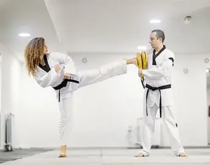

O que é Taekwondo?

O Taekwondo é uma arte marcial originária da Coreia do Sul e é conhecida pelos seus chutes rápidos, altos e precisos. Além de ser uma forma de defesa pessoal, também é um esporte olímpico praticado em diversos países.
O nome Taekwondo significa "o caminho dos pés e das mãos". A modalidade busca desenvolver não apenas habilidades físicas, mas também valores como respeito, disciplina, autocontrole e perseverança.
A prática ajuda a melhorar a coordenação motora, a flexibilidade, a concentração e a autoconfiança. Pessoas de todas as idades podem praticar e aproveitar seus benefícios.
História do Taekwondo
O Taekwondo moderno surgiu na Coreia após a Segunda Guerra Mundial, reunindo elementos de antigas artes marciais coreanas. Com o passar dos anos, espalhou-se pelo mundo e tornou-se uma das artes marciais mais populares da atualidade.
Em 2000, o Taekwondo tornou-se esporte olímpico oficial, aumentando ainda mais sua popularidade internacional.
Site oficial mundialJogos Olímpicos